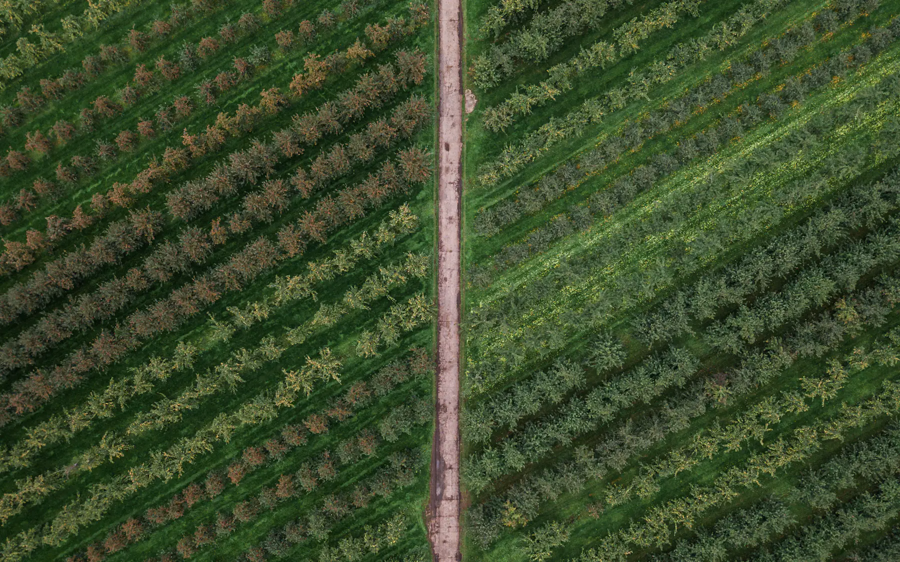
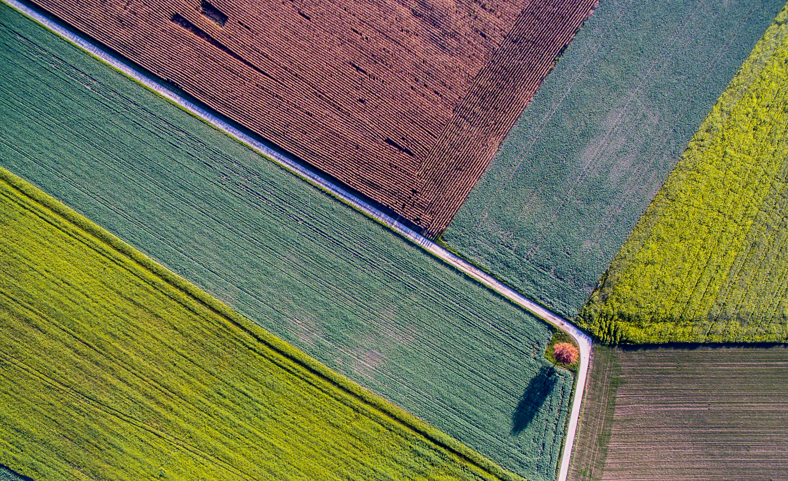
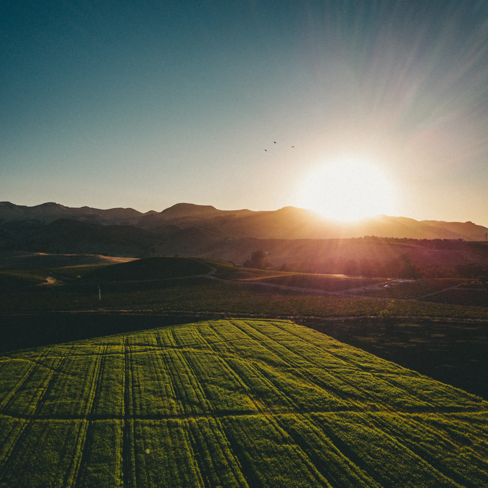
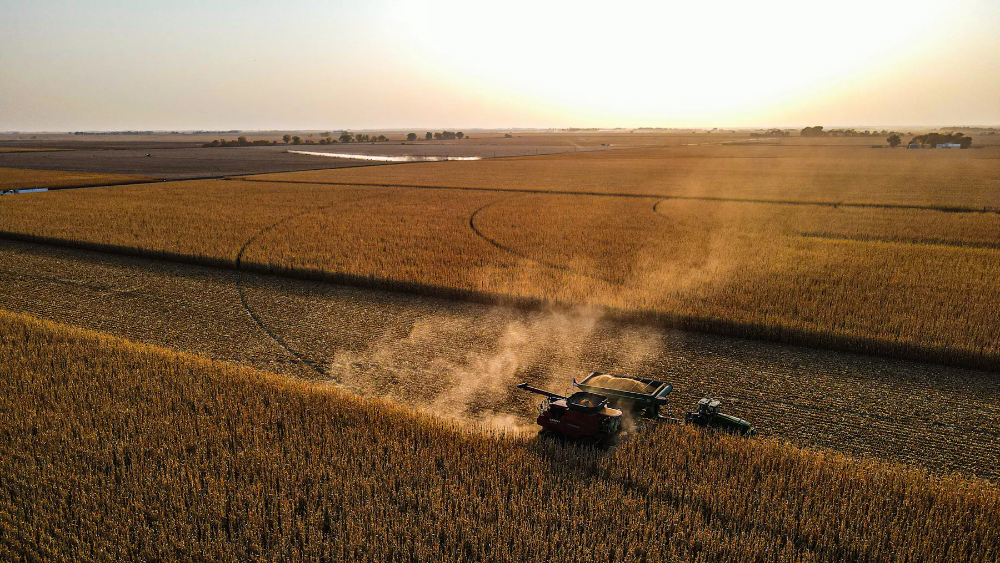

Tecnologia para quem produz
Decisões melhores. Safras mais inteligentes.
Acompanhe sua operação agrícola em tempo real e transforme dados de clima, lavoura, máquinas e produtividade em decisões mais precisas.
- Monitoramento em tempo real
- Dados centralizados
- Acesso em qualquer dispositivo
RGBCor natural, como o olho vê.
- monitorados pela plataforma
- +480 mil ha
- propriedades conectadas
- +320
- eficiência operacional média*
- +18%
- monitoramento de dados
- 24/7
* Dados demonstrativos do projeto conceitual.
O campo gera milhares de dados todos os dias.
A diferença está em saber o que fazer com eles.
A AGROVANT reúne informações essenciais da operação agrícola em uma única plataforma, ajudando produtores e gestores a acompanhar o que acontece na propriedade e tomar decisões com mais segurança.

- Talhão 01SojaNDVI 0,89 · excelente
- Talhão 04Umidade baixa34% · abaixo da média
- Talhão 03Colheita previstaem 12 dias
Tudo o que acontece na fazenda em um só lugar.
Experimente: troque de propriedade, navegue pelo menu e clique nos talhões. Os dados são demonstrativos.
Alertas · Santa Helena
Safra 2026/27
Propriedade Santa Helena
Talhão 08
- Área
- 46,2 ha
- Cultura
- Soja
- NDVI
- 0,82
- Umidade
- 67%
- Status
- Saudável
- Umidade
- 67%
- Vento
- 12 km/h
- Chuva
- 18%
Seis módulos que leem a mesma terra.
Veja o campo como dados.
- Excelente
- Saudável
- Atenção
- Crítico
O NDVI mede o vigor da lavoura pela luz que as folhas refletem. Quanto mais perto de 1, mais saudável.
Talhão 08
- Área
- 46,2 ha
- Cultura
- Soja
- Índice vegetal
- 0,82
- Umidade
- 67%
- Produtividade
- 75,1 sc/ha
- Status
- Saudável
O clima muda. Sua estratégia também.
Cruze informações climáticas com dados da lavoura para planejar operações no momento certo.
Hoje · Santa Helena
Parcialmente nublado
- 14h27°
- 15h28°
- 16h28°
- 17h27°
- 18h25°
- 19h24°
- 20h23°
- Umidade
- 67%
- Vento
- 12 km/h
- Chuva
- 18%
- Precipitação acumulada
- 72 mm
Previsão · 7 dias
Precipitação — últimos 30 dias
Total 72 mm · média histórica 64 mmVocê não precisa olhar o dashboard o tempo todo.
A AGROVANT identifica eventos importantes e envia alertas para sua equipe.
-
Alerta climático
Previsão de chuva intensa nas próximas 12 horas.
-
Umidade do solo
Talhão 04 apresenta níveis abaixo da média.
-
Máquina
Trator JD-08 atingiu intervalo previsto de manutenção.
Pergunte para os seus dados.
Transforme dados complexos em respostas simples.
Experimente
Quais talhões tiveram queda de produtividade nesta safra?
Foram identificadas quedas relevantes nos talhões 04, 12 e 17 em comparação com a safra anterior.
| Talhão | Variação | Gráfico |
|---|---|---|
| Talhão 04 | −8,4% | |
| Talhão 12 | −6,7% | |
| Talhão 17 | −9,3% |
Fontes: colheita 25/26 · NDVI · estação SH-01
Seus dados não precisam ficar espalhados.
- Estações meteorológicas
- Sensores de solo
- Máquinas agrícolas
- Drones
- Satélites
- ERPs agrícolas
- Planilhas
- APIs
Compare. Entenda. Evolua.
Produtividade média · sc/ha
- 23/24
- 24/25
- 25/26
- 26/27 prev.
Dados fictícios utilizados exclusivamente para demonstração do projeto.
Do escritório ao talhão.
Acesse informações importantes mesmo longe do computador. Sem sinal no talhão, o app continua funcionando e sincroniza quando a conexão volta.
- Web
- iOS
- Android
Visão geral
NDVI médio · 8 semanas
Talhões em atenção
Alertas 3
- Seg31°19°
- Ter29°20°
- Qua25°19°
- Qui24°18°
- Sex27°18°
Chuva · próximos dias
Uma escala para cada operação.
Produtor Rural
Controle sua propriedade com mais informação.
1 propriedadeGrupos Agrícolas
Centralize dados de diferentes propriedades.
multi-fazendaConsultorias Agronômicas
Acompanhe seus clientes e áreas monitoradas.
carteira de clientesCooperativas
Transforme dados em inteligência para produtores.
rede de cooperadosGestores Agrícolas
Tenha visão clara das operações e indicadores.
visão executiva

Grupo Santa Helena
- Local
- Mato Grosso — Brasil
- Unidades
- 3 fazendas
- Área
- 4.440 ha
- Culturas
- Soja + Milho
Mais visibilidade para decidir melhor.
Com os dados das três fazendas centralizados na AGROVANT, a equipe passou a acompanhar indicadores operacionais e agronômicos de forma integrada.
- +21%
- produtividade desde 23/24
- −9,8%
- custo por hectare
- +18,4%
- eficiência operacional
“Antes, tínhamos informação em vários lugares. Hoje conseguimos enxergar a operação inteira em poucos minutos.”
Números e depoimento são fictícios, criados para apresentar o projeto conceitual.
Da propriedade aos dados. Dos dados à decisão.
- 01
Conectamos
Integramos as informações da sua operação.
- 02
Organizamos
Centralizamos dados de áreas, máquinas, clima e safras.
- 03
Analisamos
Transformamos informações em indicadores relevantes.
- 04
Você decide
Sua equipe trabalha com uma visão mais clara da operação.
Tecnologia invisível. Resultados visíveis.
Uma infraestrutura criada para transformar diferentes fontes de informação em uma experiência simples para quem trabalha no campo.
Campo
- Satélite
- Sensores
- GPS
Cloud
- Cloud
- Machine Learning
Plataforma
- APIs
- Decisão no dashboard
Seus dados. Sua operação.
- Criptografia
- Backups automáticos
- Controle de acesso
- Infraestrutura em nuvem
- Monitoramento contínuo

Sua próxima safra começa nos dados.
Descubra como a AGROVANT pode transformar dados da sua operação em decisões mais inteligentes.
Conheça a AGROVANT.
Mostramos a plataforma com dados de uma operação parecida com a sua e ajudamos a planejar a implantação.
- Demonstração guiada de 30 minutos
- Sem compromisso
- Atendimento por especialista em agro
contato@agrovant.com.br · 0800 000 0000
Pronto.
Um especialista vai falar com você em até 1 dia útil.
- Até 1 dia útil
Chamamos você para agendar o melhor horário.
- 30 minutos
Demonstração guiada, sem compromisso.
- Na tela
A plataforma com dados de uma operação parecida com a sua.
Formulário demonstrativo: nenhum dado foi enviado ou armazenado.